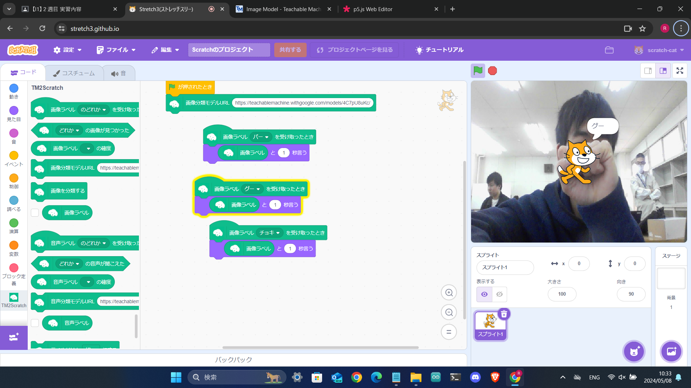

第2週目
2-1 １週目のレポートをHTMLで作る
１週目のレポート
1.内容
スクラッチの画像をレポジトリにアップロードしてrep01.htmlで読み込んだ。画像ファイルのリンクをレポジトリにアップロードした画像のリンクに変えた。実験の内容と感想を自分で考えて書いた。
2.感想
一週目の実験の内容よりは画像をアップロードしてファイルを編集するだけだったから簡単だった。githubのことがよくわからなかったけど使ったらどういうものかが分かってきた。
2-2 機械学習体験

1.内容
teachable machineを利用し、画像の識別をさせた。クラスグー、チョキ、パーを作り、それぞれの手の形の写真を覚えさせた。スクラッチを使用して認識した画像のラベルを猫が言うようにした。
2.感想
AIや機械学習と聞いたら難しそうで触れたことがなかったけど、teachable machineで画像認識を簡単に体験できて楽しくて興味がわいた。
2-3 VR（バーチャルリアリティー：Virtual Reality）会議室の体験
1.内容
VRゴーグルの電源を入れ、ガーディアンを確認した。ガーディアンの設定をする。床面を確認し、調節して決定した。青い輪の静止モードの境界線を確認し、決定した。ミラーリング用のパソコンでoculusにログインした後、ゴーグルからミラーリングを開始した。workroomsを起動し、コントローラーでデスクの平面の高さを設定した。
2.感想
VRゴーグルをつけるまで画面はそこまできれいでないと思っていたけど、思っていたよりきれいな画面で驚いた。3Dに見えるから実際にあるように見えてすごかった。